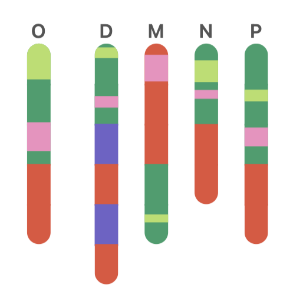

Project Documentation
One big about page to learn about translation, project motivation, project background, waka poetry, synteny, the data pipeline, and AI usage.
About translation: Translation matters. When reading any work of translation, the translator's interpretation becomes intrinsically tied with, and affects the original content. In translation, things such as structure, tone, and even content vary.
About project motivation: This project was inspired by a desire to better support the meta-level understanding and visualization of textual data in the form of comparative translation. It focuses on how visualization specifically, can be used to encourage such understanding.
About project background: This project is a digital collection of the Ogura Hyakunin Isshu (OHI), a 13th century Japanese poetry anthology containing 100 poems from 100 poets along with 4 English translations of these poems. The OHI has been translated over a dozen times. The choice of translators to include in this analysis was a decision determined by data availability and access. Only translations within the public domain were included. The translators and their respective year of publishing are included as follows: Frederick Victor Dickins (1865/1866), Clay MacCauley (1899), Yone Noguchi (1907), and William Ninnis Porter (1909). When hovering and zooming into a poem, you will see that these names have been abbreviated by their last names to the following and arranged by initial publishing date: O (original), D (Dickins), M (MacCauley), N (Noguchi), and P (Porter). More details on the anthology and this poetic form can be found in About waka poetry and the OHI.
The visualizations within this analysis are largely inspired by those included in syntenic analysis. Syntenic analysis is used in genomics to study the physical arrangement of DNA sequences and gene positions across species. It is a powerful tool to study the relationship between species that once shared a common ancestor. It is used to identify complex structural changes to the genome, such as rearrangements, insertions, and deletions. More about synteny and an explanation of its use case within this project can be found in About synteny.
About waka poetry and the OHI: Waka poetry is a classical form of Japanese poetry that follows a 31-syllable structure arranged into a 5-7-5-7-7 meter for each verse (known as ku in Japanese). You'll notice the first three ku form a haiku!
Waka poetry often focuses around the 4 seasons, love, and internal reflection.
The OHI translates in English to Ogura's one hundred people, one hundred poems. It contains, as the name reads, 100 poems from 100 poets. The best-known version was collected by anthologist Fujiwara no Teika for his home near Ogura Mountain, in Kyoto. Thus the name Ogura.
Waka poetry is distinct for a few reasons.
First, it is divided into an upper and lower section. The first 3 ku form the upper part called the kami-no-ku (5-7-5) and typically sets the scene through physical descriptions of nature. The last 2 ku form the lower part called the shimo-no-ku (7-7) and often shifts to the author's internal reflection. Within these sections, often overlapping, is a pivot that connects physical observation with internal reflection. Translations may invert this narrative structure, or add extra details to connect the two sections. In this project, we have classified the semantics contained within this upper and lower part from the original Japanese poem and mapped them to their English translations. To handle translated verses that are more imaginative than loyal to the original meanings we have also included imagined ku. From a quick glance at a grid cell when toggled to "structure", you can determine the fidelity of various translators, as well as their length similarity determined by verse-numbers. The sizing of the bars always reflects the ratio of the longest poem by verse number.
Second, waka poetry employs various literary devices. These are not found in every poem, but are relatively standard.
Most notable among them is a pivot word, called the kakekotoba. This is a word where a single phonetic word contains two meanings and often helps to bridge the kami-no-ku and the shimo-no-ku.
There is also makurakotoba, which translates literally to pillow word. Makurakotoba are 5-syllable epithets placed before specific words (eg. god, mountain) to add rhythm and evoke visual imagery.
Kigo, or season words are also incredibly common. They are words associated with a specific season (eg. cherry blossoms for spring) that show the reader the time of the year without necessarily stating the season directly. There are several other literary techniques used in waka poetry, but these are the three devices that I have focused on drawing out in my analysis.

About synteny: A brief introduction of synteny has been provided in About project background; this section serves as reasoning for synteny's use in assisting the visualization of comparative translation by drawing parallels between these two seemingly disparate fields.
Synteny is useful for spotting evolutionary shifts. For instance, if 2 species descend from one ancestor species, they will have copied genetic material from the ancestor and share similar material between themselves. This copying process is inevitably subject to mutations that occur in the form of deletions, translocations, duplications, or inversions. One method scientists use to study these changes is through this concept of synteny. Perfect synteny is when there is the absolute conservation of genetic information and order. Disrupted synteny is when any aforementioned disruptions are present.
Synteny can also be broken down into levels: micro and macro. Macrosynteny looks at whether large blocks of genes remain on the same chromosome across species. Microsynteny is the conservation of local gene content.

Stated (very) broadly, synteny can help us to understand, from an origin to destination string of information, where information and order was preserved, and where it wasn't. It helps us further identify the exact modifications that occurred. Within comparative translations, we can liken the original work in a given language as the "ancestor gene", and the translations as descendants that draw information from this ancestor. These translations rearrange and modify the original meanings to better reflect their language and fit their cultural and personal context. The use of synteny in translation studies begins to take form.
This analogy works particularly well for waka poetry, which contains a clear structure and use of literary devices. Macrosynteny can be viewed as the conservation of the overall structure (kami-no-ku and shimo-no-ku). For any given poem, the semantics of the original kami-no-ku and the shimo-no-ku can be compared with translations to view where meaning was preserved, inverted, deleted, and mutated past recognition (resulting in an imagined ku). Microsynteny focuses on literary devices to understand the preservation of local content such as kakekotoba, makurakotoba, and kigo. Through this view, we can begin to compare and contrast not only the original text to the translation, but translations against each other. We can view patterns across translators and poems to answer questions such as:
- What was the translator's goal in this poem, to preserve the literal translation, to provide a creative reinterpretation, or something else entirely?
- What in the source text is easier or more difficult to translate (seen through patterns of inheritance)?
- How does the origin language and the target language differ in narrative structure, either allowing for preservation of structure or requiring shifts?
About Data Pipeline: For ease of understanding, a simple flowchart of the full data pipeline has been included below. It details the data ingestion process through CSV (manually collected poems), data cleaning, AI Classification through targeted prompting to Claude's API, a thorough human review process to double check all classifications, and data aggregation and visualization.

About AI: I used Claude in two ways during this project. First, on the Desktop app as an engineering tool to build the data pipeline, website, and interactivity. Second, through its API to run a targeted LLM prompt as a first pass for identifying the structure and literary devices of the original Japanese poem, as well as its mapping onto translations. The design of the website as well as the data pipeline were mine.
This project is not meant to be AI-native or provide any black-box solutions to comparative translation as a whole. An expert Japanese/English translator trained in 13th century Waka poetry would be able to classify translations more reliably than AI. However, finding and paying such an expert for something that classifies as a personal project is unrealistic. All AI classifications, however, were spotchecked thoroughly by myself and a trained Japanese/English translator (thank you mom) comparing AI classifications, personal understanding of the poem, and a dual-language version of the anthology translated by Yue Meng and Stephen Johnson containing notes (hyakuninisshu.us).
About Limitations: There are limitations to this project and analysis that should be pointed out for a better understanding of its scope.
First, this project worked with translated English from over 100 years ago. While we had a general understanding of this text, there are bound to be nuances within the language of the time that were missed. Such a discrepancy may have led to a misunderstanding of a specific verse or meaning.
Second, classification decisions were ultimately made through the discussion of myself and my mother, not a waka expert. This may mean that certain details or hidden meanings were missed in our interpretation. In the attempt to remain as rigorous as possible, we frequently cross-referenced Meng and Johnson's translation and annotations of the OHI. This was very helpful, and would ultimately impact the kakekotoba and other literary devices identified. With another cross-referencing, we may have identified other devices or excised others.
Third, AI was used in development; it was helpful but not perfect. I used Claude as a tool to help me in iterating ideas quickly (moving directly from Figma to code) and frankly creating web features I personally wouldn't know how to do otherwise. As I continue to learn and develop my design skills, engineering has not been my main priority. This is included in the limitations section because it impacts the actual engineering thinking employed. If you ask me to explain a small feature in the interactivity, I'll need a few minutes to explain it to you. All code was reviewed by myself and is open to view on Github.
Acknowledgements: Thank you to my mom, who sat with me day-after-day after her work day to review 500 poems with me patiently. I promise she wasn't coerced! Though perhaps persuaded with the influx of thank-you baked goods and quality time.
Thank you to the original poets and translators who I cannot directly thank but who wrote these poems that I was able to enjoy and analyze a century (and millennia) later. Links to their work are included in Sources.
Sources:
- Noguchi (1907) — archive.org
- MacCauley (1899) — jti.lib.virginia.edu
- Porter (1909) — sacred-texts.com
- Dickens (1866) — archive.org